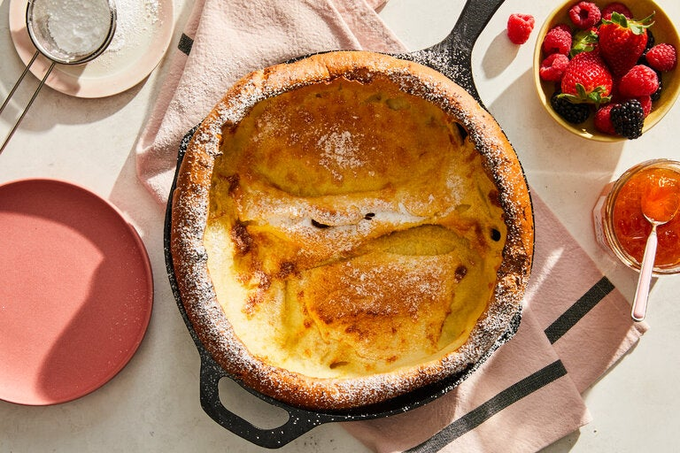

Dutch Baby Pancake

Description
This large, fluffy pancake is excellent for breakfast, brunch, lunch and dessert any time of year.
- 3 large eggs, at room temperature
- 1/2 cup all-purpose flour
- 1/2 cup whole milk, at room temperature
- 1 tablespoon sugar
- Pinch of nutmeg
- 4 tablespoons unsalted butter
- Syrup, preserves, confectioners' sugar or cinnamon sugar
Preparation
- Heat oven to 425 degrees.
- Combine eggs, flour, milk, sugar and nutmeg in a blender jar and blend until very smooth. Batter may also be mixed by hand.
- Place butter in a heavy 10-inch skillet and place in the oven. As soon as the butter has melted (watch it so it does not burn) add the batter to the pan, return pan to the oven and bake for 20 minutes, until the pancake is puffed and golden. Lower oven temperature to 300 degrees and bake 5 minutes longer.
- Remove pancake from oven, cut into wedges and serve at once topped with syrup, preserves, confectioners' sugar or cinnamon sugar.
Return Home